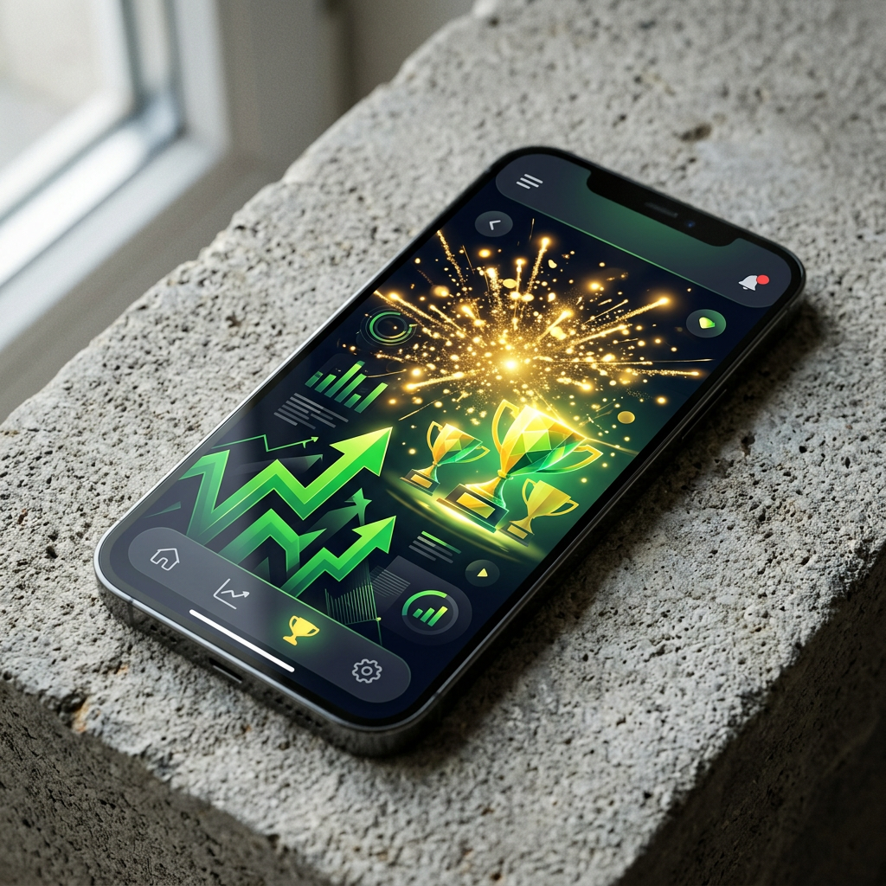

Come Scegliere i Migliori Nuovi Casino Online in Sicurezza
L'industria del gioco online in Italia è in continua evoluzione e ogni anno assistiamo al lancio di numerosi nuovi casino online che cercano di conquistare il mercato italiano. Questi casinò emergenti puntano su tecnologie innovative, design moderno e promozioni generose per attirare nuovi giocatori. Tuttavia, con l'aumento delle opzioni disponibili, diventa sempre più importante saper distinguere le piattaforme affidabili da quelle meno sicure. La scelta di un nuovo casinò italiano richiede attenzione a diversi fattori fondamentali che garantiscono un'esperienza di gioco protetta e divertente.
I casinò nuovissimi spesso si distinguono per l'utilizzo di tecnologie all'avanguardia e per un'attenzione particolare all'esperienza utente. A differenza dei portali storici, i nuovi operatori devono costruire rapidamente la propria reputazione e lo fanno offrendo interfacce intuitive, cataloghi di giochi ampi sin dal primo giorno e assistenza clienti multilingue disponibile 24 ore su 24. Inoltre, molti di questi siti integrano fin da subito metodi di pagamento moderni come criptovalute e wallet elettronici, rispondendo alle esigenze dei giocatori più esigenti.
Prima di registrarsi su qualsiasi piattaforma, è essenziale verificare alcuni elementi chiave. La licenza di gioco è il primo requisito da controllare: operatori seri espongono chiaramente le certificazioni ottenute da autorità riconosciute. La trasparenza sulle condizioni dei bonus, la disponibilità di giochi certificati con RNG (Random Number Generator) verificato e la presenza di politiche chiare sulla protezione dei dati personali sono tutti indicatori di affidabilità. I migliori casino online nuovi offrono anche strumenti per il gioco responsabile, come limiti di deposito personalizzabili e opzioni di autoesclusione.
Sicurezza, Licenze e Protezione dei Dati nei Nuovi Casino Online
La sicurezza è l'aspetto più importante quando si sceglie un nuovo operatore di gioco online. Una licenza valida rappresenta la garanzia principale che il casinò opera nel rispetto di normative stringenti. In Italia, l'ADM (Agenzia delle Dogane e dei Monopoli, ex AAMS) è l'autorità di riferimento per i casinò nazionali. Tuttavia, molti nuovi casino online 2026 operano con licenze internazionali rilasciate da giurisdizioni riconosciute come Malta (MGA), Curacao o Gibraltar, offrendo comunque elevati standard di sicurezza e protezione.
Oltre alla licenza, i casinò moderni utilizzano protocolli di crittografia SSL a 256 bit, gli stessi impiegati dalle istituzioni bancarie per proteggere le transazioni finanziarie. Questa tecnologia garantisce che tutti i dati sensibili, dalle informazioni personali ai dettagli delle carte di credito, vengano trasmessi in modo sicuro e inaccessibile a terze parti. I nuovi casino più affidabili dichiarano apertamente quali tecnologie di sicurezza implementano e pubblicano le certificazioni ottenute da enti indipendenti come eCOGRA o iTech Labs.
La protezione dei dati personali segue le normative europee GDPR, che impongono agli operatori di gestire le informazioni degli utenti con la massima riservatezza. Prima di accettare i termini e condizioni, è consigliabile leggere l'informativa sulla privacy per comprendere come vengono utilizzati e conservati i propri dati. Le piattaforme serie offrono anche meccanismi di verifica dell'identità (KYC) necessari per prevenire frodi e riciclaggio di denaro, anche se esistono casino senza richiesta documenti che accelerano questo processo mantenendo elevati standard di sicurezza.

Bonus di Benvenuto e Promozioni nei Nuovi Casinò con Bonus
Una delle caratteristiche più attraenti dei nuovi casinò con bonus è sicuramente la generosità delle offerte promozionali. Per guadagnarsi rapidamente una fetta di mercato, i nuovi operatori propongono pacchetti di benvenuto competitivi che spesso superano quelli dei casinò storici. Questi bonus possono includere percentuali di match sul primo deposito che vanno dal 100% fino al 200%, accompagnate da centinaia di giri gratis su slot popolari. Alcuni casinò offrono anche bonus senza deposito, permettendo ai giocatori di provare la piattaforma senza rischiare denaro proprio.
Le promozioni non si limitano al bonus di benvenuto. I casino nuovi implementano programmi fedeltà strutturati su più livelli, con ricompense crescenti man mano che si sale di grado. Cashback settimanali, tornei con montepremi garantiti, reload bonus sui depositi successivi e offerte personalizzate sono solo alcune delle iniziative ricorrenti. Molti operatori hanno adottato sistemi di gamificazione che trasformano l'esperienza di gioco in un'avventura interattiva, dove completare missioni e sfide sblocca premi esclusivi.
I free spin rappresentano una delle promozioni più apprezzate dai giocatori di slot. I nuovi casino italiani spesso li distribuiscono generosamente, sia come parte del pacchetto di benvenuto sia attraverso promozioni stagionali o legate al lancio di nuovi giochi. È importante verificare se i giri gratis sono vincolati a specifiche slot o se possono essere utilizzati su un'ampia selezione di titoli. Inoltre, alcuni operatori offrono giri gratis senza requisiti di scommessa sulle vincite, un dettaglio che aumenta notevolmente il valore effettivo della promozione.
Attenzione ai Requisiti di Puntata (Wagering)
Sebbene i bonus siano estremamente allettanti, è fondamentale comprendere i termini e le condizioni che li accompagnano. Il requisito di puntata, o wagering requirement, indica quante volte è necessario scommettere l'importo del bonus prima di poter prelevare le vincite generate. Un bonus da 100€ con requisito 35x significa che dovrai scommettere complessivamente 3.500€ prima che il denaro bonus diventi prelevabile. I migliori casino online nuovi applicano requisiti ragionevoli, generalmente compresi tra 20x e 40x.
È importante distinguere tra requisiti di scommessa applicati solo al bonus e quelli applicati alla somma di bonus più deposito. Nel secondo caso, il volume di gioco richiesto aumenta considerevolmente. Inoltre, non tutti i giochi contribuiscono allo stesso modo al soddisfacimento dei requisiti: le slot generalmente contano al 100%, mentre giochi da tavolo come blackjack e roulette potrebbero contribuire solo al 10% o essere completamente esclusi. Leggere attentamente i termini e condizioni evita spiacevoli sorprese al momento del prelievo.

Altro aspetto da considerare è il limite massimo di vincita applicabile ai bonus. Alcuni nuovi casino online stabiliscono un tetto alle vincite che si possono ottenere utilizzando il denaro bonus, tipicamente tra 5 e 10 volte l'importo del bonus stesso. Anche la validità temporale è rilevante: i bonus hanno generalmente una scadenza entro cui i requisiti devono essere soddisfatti, solitamente tra 7 e 30 giorni. Pianificare le proprie sessioni di gioco tenendo presente questi limiti temporali è essenziale per sfruttare al massimo le promozioni.
Innovazioni Tecnologiche e Nuovi Casino Italiani
I nuovi casino online 2026 si distinguono per l'adozione di tecnologie all'avanguardia che migliorano significativamente l'esperienza di gioco. L'interfaccia utente è progettata seguendo i principi del design moderno, con navigazione intuitiva, tempi di caricamento rapidi e grafica accattivante. Molte piattaforme offrono la possibilità di personalizzare l'aspetto del sito, inclusa l'opzione dark mode sempre più richiesta dai giocatori che preferiscono giocare in ambienti con luminosità ridotta.
L'intelligenza artificiale sta rivoluzionando il modo in cui i casinò interagiscono con i giocatori. Algoritmi avanzati analizzano le preferenze individuali per suggerire giochi in linea con i gusti personali, ottimizzando il tempo di ricerca nel vasto catalogo disponibile. Alcuni operatori utilizzano chatbot AI per fornire assistenza immediata alle domande frequenti, lasciando agli operatori umani la gestione delle richieste più complesse. Questa combinazione garantisce supporto rapido ed efficiente 24 ore su 24.
I programmi fedeltà dei casinò nuovissimi incorporano elementi di gamificazione che rendono l'esperienza più coinvolgente. Sistemi di missioni giornaliere, barre di progresso visive, achievement da sbloccare e classifiche competitive tra giocatori trasformano ogni sessione in un'avventura interattiva. Salendo di livello si sbloccano vantaggi concreti come bonus esclusivi, prelievi prioritari, limiti di deposito maggiorati e account manager dedicati per i VIP.
Giocabilità Mobile e App Native
Il mobile gaming rappresenta oggi la modalità di gioco preferita dalla maggioranza degli utenti. I nuovi casino sono sviluppati con approccio "mobile-first", garantendo che tutte le funzionalità siano perfettamente accessibili da smartphone e tablet senza compromessi. La tecnologia HTML5 permette ai giochi di adattarsi automaticamente a qualsiasi dimensione di schermo, offrendo grafica fluida e controlli touch ottimizzati. Non è necessario scaricare software ingombranti: basta accedere al sito tramite browser per giocare istantaneamente.

Molti operatori mettono a disposizione anche app native per iOS e Android, scaricabili direttamente dagli store ufficiali o dai siti dei casinò. Queste applicazioni offrono alcuni vantaggi rispetto alla versione browser, come accesso più rapido, notifiche push per promozioni esclusive e, in alcuni casi, versioni ottimizzate di giochi popolari. L'interfaccia è progettata specificamente per dispositivi mobili, con menu semplificati e pulsanti dimensionati per facilitare la navigazione con una sola mano.
La qualità dell'esperienza mobile è un indicatore importante della serietà di un operatore. I migliori casino online nuovi investono risorse significative nello sviluppo mobile, assicurando che depositi, prelievi e accesso al servizio clienti siano gestibili comodamente da smartphone. I giochi live in particolare beneficiano di streaming video ad alta definizione ottimizzato per connessioni mobili, permettendo di vivere l'emozione del casinò dal vivo ovunque ci si trovi.
I Giochi Più Popolari Offerti dai Casino Nuovi
Il catalogo giochi è uno degli elementi distintivi dei nuovi casino online. A differenza dei casinò storici che hanno costruito la loro libreria gradualmente nel tempo, i nuovi operatori stipulano accordi simultanei con decine di fornitori software per offrire migliaia di titoli fin dal lancio. Questa strategia permette ai giocatori di accedere immediatamente a un'offerta completa che spazia dalle slot classiche ai tavoli live, dai giochi di carte ai game show interattivi.
Le partnership con provider prestigiosi garantiscono qualità e varietà. Nomi come NetEnt, Pragmatic Play, Evolution Gaming, Play'n GO e Microgaming rappresentano l'eccellenza nel settore, con giochi caratterizzati da grafica spettacolare, meccaniche innovative e RTP (Return to Player) competitivi. I nuovi casinò con bonus spesso presentano in homepage le ultime uscite e i titoli più popolari, facilitando la scoperta di nuove esperienze di gioco.
La diversificazione del catalogo risponde alle preferenze di tutti i tipi di giocatori. Chi ama l'azione frenetica trova migliaia di slot con temi vari, dai classici fruit machine ai titoli cinematografici con licenza ufficiale. Gli appassionati di strategia preferiscono i tavoli di blackjack, poker e roulette, disponibili in numerose varianti. Non mancano giochi di nicchia come bingo, keno, scratch card e giochi crash come Aviator, che stanno guadagnando popolarità tra i giocatori più giovani.
Slot Machine di Ultima Generazione e Casino Live
Le slot machine rappresentano la categoria più ampia e popolare nei nuovi casino italiani. Le slot moderne offrono meccaniche innovative che vanno ben oltre i tradizionali rulli fissi. Il sistema Megaways, ad esempio, cambia il numero di simboli su ogni rullo a ogni spin, creando fino a 117.649 combinazioni vincenti. Le Cluster Pays eliminano le linee di pagamento tradizionali, assegnando vincite quando gruppi di simboli identici si toccano. Funzionalità come cascate, moltiplicatori crescenti, acquisto del bonus e jackpot progressivi mantengono alta l'adrenalina.
Quando si scelgono le slot, l'RTP (Return to Player) è un parametro importante da considerare. Questa percentuale indica quanto del denaro scommesso viene restituito ai giocatori nel lungo periodo. Slot con RTP superiore al 96% sono considerate generose, mentre quelle sotto il 94% tendono a trattenere maggiormente le vincite. I casinò nuovissimi trasparenti pubblicano l'RTP di ogni gioco, permettendo scelte informate. Anche la volatilità è rilevante: slot ad alta volatilità pagano vincite grandi ma rare, mentre quelle a bassa volatilità distribuiscono premi più piccoli ma frequenti.
Il casino live rappresenta l'evoluzione più emozionante del gioco online. Attraverso streaming video in alta definizione, i giocatori interagiscono con croupier professionisti che conducono partite in tempo reale da studi dedicati. L'offerta include tutti i classici come roulette, blackjack, baccarat e poker in molteplici varianti, oltre a innovativi game show come Crazy Time, Monopoly Live e Dream Catcher che combinano elementi di gioco da tavolo con ruote della fortuna e moltiplicatori casuali. La chat integrata permette di comunicare con i dealer e altri giocatori, ricreando l'atmosfera sociale del casinò terrestre.
Metodi di Pagamento: Depositi e Prelievi Veloci
La velocità e varietà dei metodi di pagamento sono aspetti cruciali nella scelta di un nuovo operatore. I nuovi casino online comprendono che i giocatori moderni richiedono transazioni istantanee e sicure, per questo integrano soluzioni all'avanguardia fin dal lancio. I portafogli elettronici come Skrill, Neteller e MuchBetter dominano per rapidità, elaborando depositi istantanei e prelievi in poche ore. Per chi preferisce queste soluzioni, è utile consultare le opzioni disponibili sui casino non aams con neteller, dove questo metodo è particolarmente diffuso.
Le carte di credito e debito rimangono tra i metodi più utilizzati grazie alla loro universalità. Visa e Mastercard sono accettate praticamente ovunque, mentre circuiti come American Express sono supportati da un numero crescente di operatori premium. Gli utenti interessati a questo specifico metodo possono approfondire visitando le guide sui casino american express per scoprire quali piattaforme offrono le migliori condizioni. I depositi con carta sono immediati, mentre i prelievi richiedono generalmente da 3 a 5 giorni lavorativi.
Le criptovalute stanno rivoluzionando il settore dei pagamenti nei casinò online. Bitcoin, Ethereum, Litecoin e Tether offrono transazioni pseudoanonime, commissioni ridotte e tempi di elaborazione rapidi. I nuovi casino online 2026 più innovativi supportano nativamente le crypto, permettendo depositi e prelievi in pochi minuti indipendentemente dall'importo. Questa soluzione è particolarmente apprezzata da chi cerca privacy e desidera evitare intermediari bancari. Alcuni operatori crypto-friendly offrono anche bonus specifici per chi deposita in valute digitali.
Per chi preferisce il controllo diretto sulle proprie spese di gioco, le carte prepagate rappresentano un'eccellente opzione. Paysafecard è il leader indiscusso in questo segmento: si acquista presso punti vendita fisici per un importo predefinito e si utilizza il codice PIN per depositare, senza condividere alcuna informazione bancaria. Per maggiori dettagli su questo metodo sicuro, si consiglia di visitare la sezione dedicata ai casinò online che accettano paysafecard. Anche Neosurf segue lo stesso principio, offrendo privacy massima e controllo totale del budget di gioco.
La velocità dei prelievi è forse l'aspetto più critico per i giocatori. Nessuno vuole attendere settimane per ricevere le proprie vincite. I migliori casino online nuovi processano le richieste di Pagamento: entro 24-48 ore, con alcuni operatori che offrono prelievi istantanei per clienti verificati che utilizzano e-wallet o crypto. Per chi cerca la massima rapidità nei pagamenti, esistono piattaforme specializzate descritte nelle guide sui siti con Pagamento: immediato, dove l'attesa si riduce a pochi minuti.
Vantaggi e Svantaggi dei Nuovi Casino Online
Scegliere un nuovo casinò italiano presenta numerosi vantaggi evidenti. Il primo è sicuramente la generosità delle promozioni: per conquistare utenti, i nuovi operatori propongono pacchetti di benvenuto più competitivi rispetto alla concorrenza consolidata. L'esperienza utente è generalmente superiore grazie a design moderni, interfacce intuitive e tecnologie all'avanguardia implementate fin dall'inizio. Non dovendo gestire sistemi legacy obsoleti, questi casinò garantiscono velocità di caricamento superiori e compatibilità perfetta con tutti i dispositivi.
Il catalogo giochi è un altro punto di forza. Mentre i casinò storici hanno spesso contratti esclusivi con pochi provider, i nuovi entranti stipulano accordi con decine di fornitori simultaneamente, offrendo immediatamente migliaia di titoli. I metodi di pagamento sono al passo coi tempi, includendo wallet elettronici, criptovalute e altre soluzioni moderne che accelerano transazioni e riducono commissioni. L'innovazione è nel DNA di questi operatori, che sperimentano con gamificazione, tornei interattivi e programmi fedeltà strutturati per mantenere alto l'engagement.
Tuttavia, esistono anche alcuni svantaggi da considerare. Il principale è la mancanza di una reputazione consolidata nel tempo. Mentre i casinò storici hanno anni di recensioni verificate e track record comprovato, i nuovi operatori devono ancora dimostrare affidabilità e solidità finanziaria. Questo può creare preoccupazioni legittime nei giocatori più cauti. Il servizio clienti, seppur disponibile 24/7, potrebbe essere inizialmente meno rodato rispetto a quello di operatori con anni di esperienza nella gestione di problematiche complesse.
Un altro aspetto da valutare è la dimensione della community. I casinò nuovissimi hanno generalmente un numero inferiore di giocatori attivi rispetto alle piattaforme consolidate. Questo può influire sui montepremi dei tornei e sulle jackpot progressive, che crescono più lentamente con meno partecipanti. Inoltre, essendo nuovi sul mercato, potrebbero non aver ancora sviluppato app native per tutti i sistemi operativi o potrebbero offrire meno opzioni linguistiche nel supporto clienti. È fondamentale bilanciare i vantaggi immediati con la necessità di sicurezza e stabilità a lungo termine.
| Caratteristica | Vantaggi | Svantaggi |
|---|---|---|
| Bonus e Promozioni | Offerte generose e competitive | Requisiti a volte complessi da comprendere |
| Tecnologia | Piattaforme moderne e veloci | Possibili bug iniziali da risolvere |
| Catalogo Giochi | Migliaia di titoli da subito | Jackpot progressivi inizialmente più bassi |
| Reputazione | Voglia di dimostrare qualità | Mancanza di storico verificabile |
| Assistenza | Supporto multicanale 24/7 | Team ancora in fase di formazione |